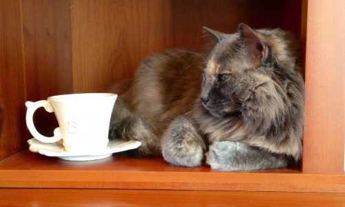
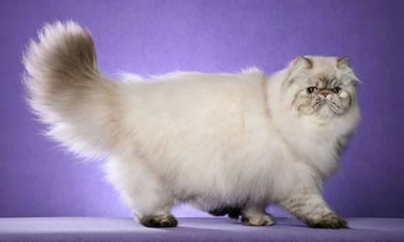

Season 2016/2017
-

Te para gatos
En chinga se hizo esta pagina!
-
No me gusta nadar
En chinga se hizo esta pagina!
-

Gato de gala
En chinga se hizo esta pagina!
-
Ya basta con estos gatos
En chinga se hizo esta pagina!
Repertoire
-

CHAîNE DE MONTAGE
A single woman tells us – she tells us about Juarez, a town on the border between Mexico and the United States, a town of maquiladoras, factories for women who are exploited at will. They come from all over the country to work there, and the cardboard shacks have multiplied to the edge of the desert. In 1993, the body of a young woman was fund...
-

A MOON BETWEEN TWO HOUSES
Plume is lively, chatty, cheerful. Taciturne, on the other hand, talks little, but he watches and listens. His passion is music. They live next door to each other, but that, it seems, is all they have in common. Only in the night, with its spooky sounds and looming shadows, do they learn how to find out about each other, smooth over their...
-

STORMY NIGHT
A little girl and her dog, on a stormy night. Questions spring up in her mind. Thoughts are born, take flight, come back to sting, bounce off the invisible walls of consciousness. In the deep of night, the child wonders about the meaning of life, ponders troubling questions, turns over the infinitely small and the infinitely large. The wind...
-

THE SOUND OF CRACKING BONES
Elikia is a child, among so many others, who has seen her life overturned from one day to the next in a chaotic, lawless civil war. The girl, kidnapped from her family, becomes a child soldier. She is a victim, but she is also an executioner in an untenable situation that blurs the most elementary laws of ethics. How can she grow up and remain...
-

SHOES OF SAND
Élise and Léo live in a vacuum, prisoners of the fear of the unknown and of regimented time measured in grains of sand. One morning, thanks to an exquisite dream, out of the desire to do something good, out of the excitation of shoes held too long on the leash, time breaks down, the door opens . . . the sky and the earth tip . . .The daily...
-

THE LAND OF KNEES
Timothée and Sammy, two young boys, meet secretly in an alley behind a theatre. Because they think that kisses and hugs are counted, they prepare to flee in search of a country where knees are like “public places” … While Sammy waits outside, Timothée enters the theatre for a last trip to the bathroom before they make their departure. Sarah, a...
-

THE OGRELING
A house in a thick forest, a school at the end of the road, vegetables day and night, the smell of blood hanging in the air. A careless rooster, the fox and the weasel, a wolf and hunters, children and ogres, an ogre child. In The Ogreling, the son of an ogre decides to escape his destiny. But first, he must overcome three ordeals,...
-

SALVADOR
In the heart of South America is a mountain, as beautiful in the light of morning as cruel in the darkness of the mines that run through it in all directions. Salvador, a child of the mountain, who has become a writer, remembers . . . the departure of his father and brother, who never returned, his sister Ana’s coloured pencils, his other...
-